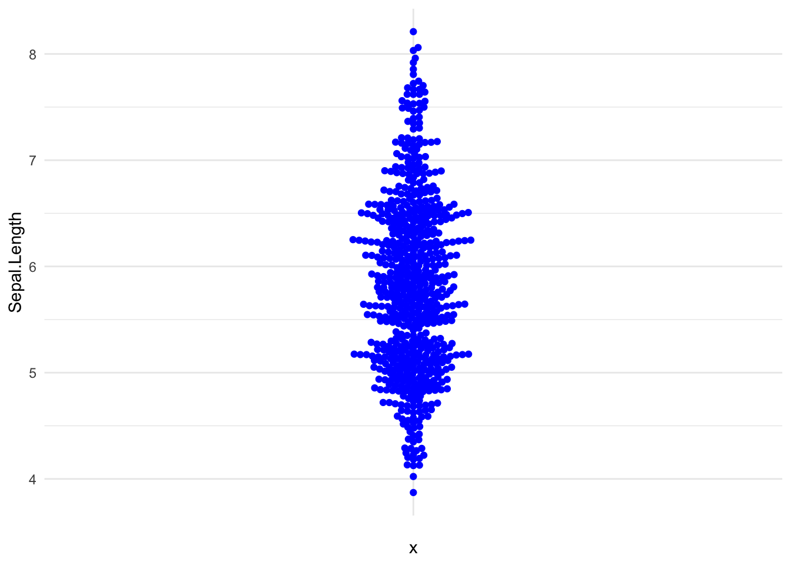
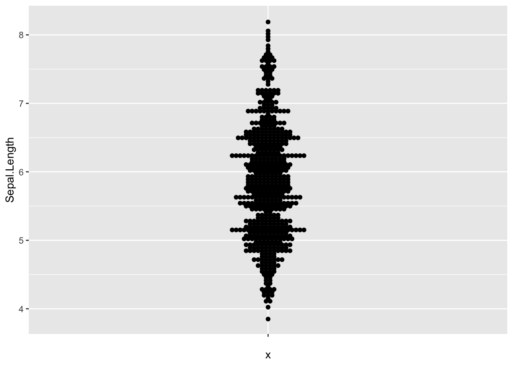

Packages
For this post, we need to install and load the ggbeeswarm package.
We can install it from CRAN using
install.packages("ggbeeswarm"). Then, we can load it:
Dataset
Since beeswarm plots are made to
visualize individual data points, we need a dataset
that contains numerical values. Here, we’ll use the iris
dataset, which is a built-in dataset in R.
We can easily load it:
Beeswarm with ggplot2
The package comes with 2 main functions:
geom_beeswarm(): to create a beeswarm plot with ggplot2geom_quasirandom(): to create a quasirandom plot, which is a mix between a beeswarm and a jitter plot.
In this post, we’ll focus on the geom_beeswarm()
function.
Flip the plot
We can super easily flip the plot by changing the x and
y aesthetics:
Custom theme
We can change the color of the points and the overall theme of the
plot using the theme() function:

Change the position behavior
By default, the geom_beeswarm() function will use the
swarm method to position the points. We can change this
behavior using the method argument. Here are the
available options:
swarm: the default methodcompactswarm: similar toswarm, but the points are more compactcenter: the points are centered on the x-axishex: the points are positioned in hexagonssquare: the points are positioned in squares
Here’s an example with center:

Going further
This post explains how to create and customize a beeswarm plot with ggbeeswarm.
You might also be interested in how to create a grouped beeswarm plot with ggplot2.
Related chart types